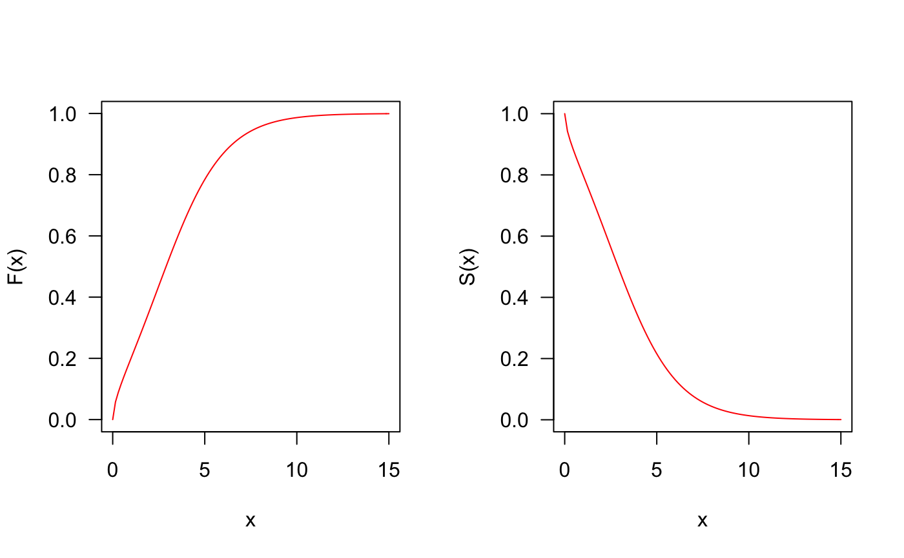
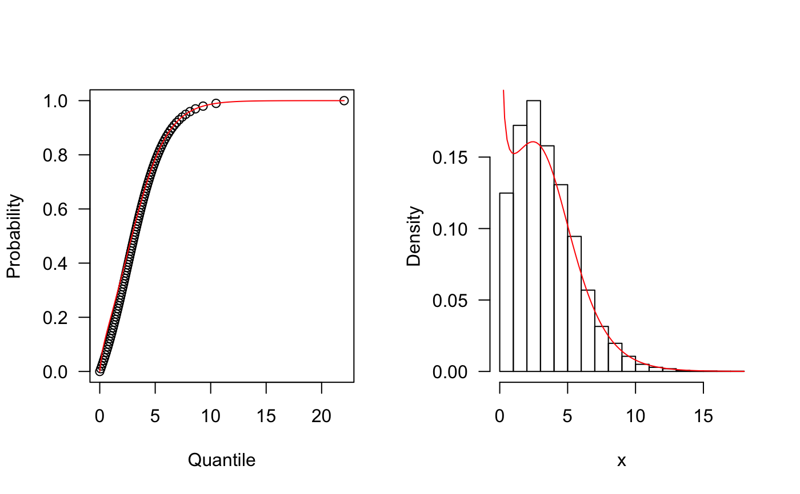

Density, distribution function, quantile function,
random generation and hazard function for the Marshall-Olkin logistic-exponential distribution
with parameters mu, sigma, and nu .
dMOLE(x, mu, sigma, nu, log = FALSE) pMOLE(q, mu, sigma, nu, tau, lower.tail = TRUE, log.p = FALSE) qMOLE(p, mu, sigma, nu, tau, lower.tail = TRUE, log.p = FALSE) rMOLE(n, mu, sigma, nu, tau) hMOLE(x, mu, sigma, nu, tau)
| x, q | vector of quantiles. |
|---|---|
| mu | parameter. |
| sigma | parameter. |
| nu | parameter. |
| log, log.p | logical; if TRUE, probabilities p are given as log(p). |
| lower.tail | logical; if TRUE (default), probabilities are P[X <= x], otherwise, P[X > x]. |
| p | vector of probabilities. |
| n | number of observations. |
dMOLE gives the density, pMOLE gives the distribution
function, qMOLE gives the quantile function, rMOLE
generates random deviates and hMOLE gives the hazard function.
The Marshall-Olkin logistic-exponential Distribution with parameters mu,
sigma, and nu has density given by
\(f(x)=\ \mu \sigma \nu \exp^{\nu x}[\exp^{\nu x}-1]^{-\mu-1}/ [1 + \sigma [\exp^{\nu x}-1]^{-\mu}]^2\)
for x > 0
## The probability density function par(mfrow=c(1, 2)) curve(dMOLE(x, mu=0.6, sigma=5.5, nu=1), from=0, to=8, ylim=c(0, 0.3), col="red", las=1, ylab="f(x)") curve(dMOLE(x, mu=3, sigma=15, nu=1.2), from=0, to=3, ylim=c(0, 1.5), col="red", las=1, ylab="f(x)")## The cumulative distribution and the Reliability function par(mfrow=c(1, 2)) curve(pMOLE(x, mu=0.6, sigma=5.5, nu=1), from=0, to=15, col="red", las=1, ylab="F(x)") curve(pMOLE(x, mu=0.6, sigma=5.5, nu=1, lower.tail=FALSE), from=0, to=15, col="red", las=1, ylab="S(x)")## The quantile function p <- seq(from=0, to=0.99999, length.out=100) plot(x=qMOLE(p, mu=0.6, sigma=5.5, nu=1), y=p, xlab="Quantile", las=1, ylab="Probability") curve(pMOLE(x, mu=0.6, sigma=5.5, nu=1), from=0, add=TRUE, col="red") ## The random function hist(rMOLE(n=10000, mu=0.6, sigma=5.5, nu=1), freq=FALSE, xlab="x", las=1, main="")## The Hazard function par(mfrow=c(1,1)) curve(hMOLE(x, mu=0.6, sigma=5.5, nu=1), from=0, to=8, col="red", ylab="Hazard function", las=1)